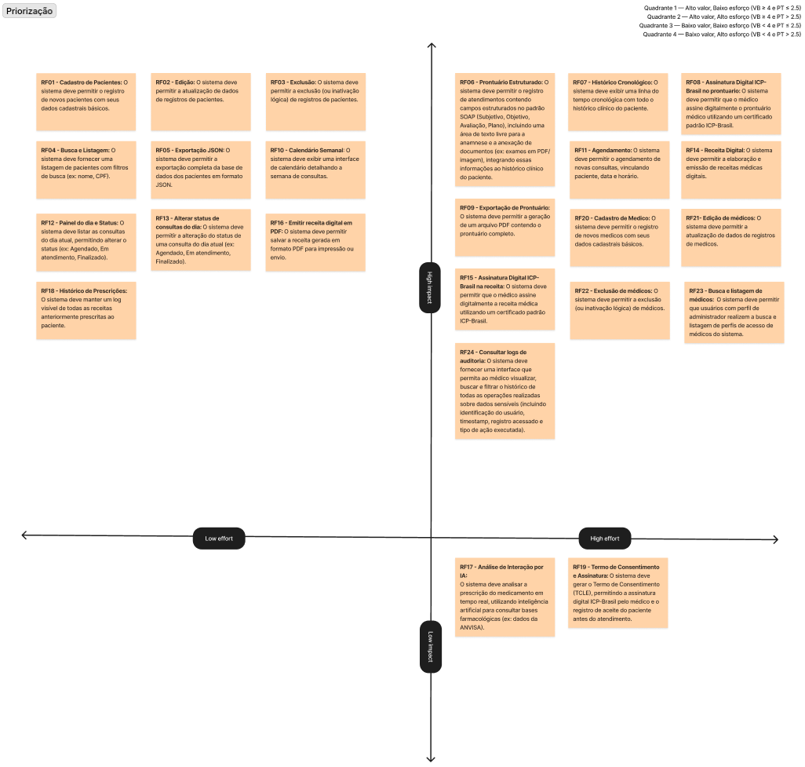

Backlog de produto
10 Backlog
A seção 10.1 apresenta o backlog geral, a priorização por meio do modelo quantitativo de quadrantes, e as dependências de RNFs. A seção 10.2 detalha a composição e justificativas do Produto Mínimo Viável (MVP) — o subconjunto funcional que entrega o máximo de valor com o menor custo técnico, viabilizando uma entrega coerente e funcional dentro do prazo acadêmico, referenciando os itens do backlog principal para evitar duplicação.
10.1 Backlog Geral e Priorização
Para a priorização do backlog, a equipe definiu escalas numéricas de 1 a 5 para avaliar cada User Story de forma consistente e objetiva, minimizando a subjetividade na atribuição de notas.
Critérios de Avaliação e Escalas
1. Valor de Negócio (VN)
Mapeia a relevância e criticidade da funcionalidade sob a ótica assistencial, operacional e regulatória do consultório médico.
| Nível | Classificação | Critério Objetivo | Exemplos de Aplicação |
|---|---|---|---|
| 1 | Muito Baixo | Recurso puramente cosmético ou opcional. Sua ausência não afeta de forma alguma o trabalho clínico nem a experiência do paciente. | Ajustes secundários de tema ou layout visual. |
| 2 | Baixo | Conveniência secundária. Melhora a experiência do usuário, mas não otimiza processos essenciais e possui alternativas manuais óbvias. | Relatórios secundários de estatística de uso da plataforma. |
| 3 | Médio | Automação produtiva. Otimiza processos recorrentes da clínica, mas sua indisponibilidade pode ser contornada manualmente sem prejuízo. | Análise em tempo real de interações medicamentosas por IA. |
| 4 | Alto | Essencial à operação diária ou segurança assistencial. A ausência gera gargalo operacional severo ou descontinuidade no cuidado do paciente. | Calendário de consultas, histórico de receitas, logs de auditoria. |
| 5 | Crítico | Bloqueador absoluto da operação básica ou requisito regulatório compulsório (normas obrigatórias do CFM, LGPD ou assinatura digital ICP-Brasil). | Registro de prontuário SOAP, assinatura digital, cadastro básico de pacientes. |
2. Complexidade Técnica (CT)
Mapeia o nível de desafio de desenvolvimento associado à infraestrutura de código, lógica de negócio, integrações e segurança.
| Nível | Classificação | Critério Objetivo | Exemplos de Aplicação |
|---|---|---|---|
| 1 | Muito Baixa | Telas puramente estáticas ou operações CRUD elementares em entidade única, sem regras de negócio ou validações complexas. | Listagem básica de pacientes ou busca por texto simples. |
| 2 | Baixa | CRUDs envolvendo poucas tabelas relacionadas ou persistência local direta (Dexie.js), sem integrações externas. | Atualização cadastral básica e inativação lógica de registros. |
| 3 | Média | Envolve regras de negócio moderadas, manipulação de múltiplos estados de dados (agenda) ou geração local de arquivos estruturados (PDF). | Geração e exportação do prontuário em PDF, controle de status de consulta. |
| 4 | Alta | Requer integrações complexas com APIs externas (IA) ou aplicação de algoritmos de segurança (Web Crypto API, assinaturas ICP-Brasil). | Assinatura digital do prontuário, análise de prescrições por IA. |
| 5 | Muito Alta | Exige soluções complexas de arquitetura distribuída, sincronização offline de banco local com resolução automática de conflitos. | Sincronização offline-first bidirecional em segundo plano. |
3. Esforço de Implementação (EI)
Mapeia a estimativa de tempo e recursos humanos dedicados ao desenvolvimento de código, testes automatizados e homologação.
| Nível | Classificação | Estimativa de Tempo de Desenvolvimento | Recursos / Dependências |
|---|---|---|---|
| 1 | Muito Baixo | Resolvido em poucas horas por um único desenvolvedor. | Sem dependência de outros componentes ou necessidade de nova infraestrutura. |
| 2 | Baixo | Consome de 1 a 2 dias de desenvolvimento. | Envolve componentes simples de tela e persistência local padrão. |
| 3 | Médio | Consome de 3 a 4 dias de desenvolvimento. | Requer criação de componentes interconectados e testes de integração de fluxo. |
| 4 | Alto | Consome uma sprint semanal inteira de um desenvolvedor focado. | Exige extensa modelagem de dados, segurança lógica e baterias de testes robustas. |
| 5 | Muito Alto | Exige esforço de múltiplos desenvolvedores por mais de uma sprint. | Envolve alterações estruturais na arquitetura, infraestrutura de rede ou segurança. |
Pontuação Técnica (PT) e Limiares de Priorização
A Pontuação Técnica (PT) de cada história é obtida pela média aritmética simples entre a Complexidade Técnica (CT) e o Esforço de Implementação (EI):
A partir do cruzamento de VN e PT, as User Stories são classificadas em um gráfico de quadrantes que define objetivamente a prioridade e a elegibilidade para o MVP:
- Quadrante 1 — Alto valor, Baixo esforço (VN >= 4 e PT <= 2.5): Alta prioridade. Itens indispensáveis para o consultório que possuem desenvolvimento previsível e rápido. Devem compor o MVP.
- Quadrante 2 — Alto valor, Alto esforço (VN >= 4 e PT > 2.5): Média-alta prioridade. Itens fundamentais para o negócio, mas com alto custo técnico de desenvolvimento. Podem compor o MVP, exigindo fatiamento ou acompanhamento rigoroso.
- Quadrante 3 — Baixo valor, Baixo esforço (VN < 4 e PT <= 2.5): Média-baixa prioridade. Itens de conveniência secundária simples de implementar. Candidatos a inclusão caso haja margem de cronograma.
- Quadrante 4 — Baixo valor, Alto esforço (VN < 4 e PT > 2.5): Baixa prioridade. Recursos secundários com alto custo técnico. Não devem compor o MVP.
Justificativa dos Limiares (Pontos de Corte)
- Origem do Limiar de Valor de Negócio (VN >= 4): O corte em 4 garante que apenas funcionalidades classificadas como "Altas" ou "Críticas" entrem no MVP. Isso ocorre porque recursos com VN de 1 a 3 (como análises automáticas por IA ou termos secundários) representam ótimas conveniências assistenciais ou de automação, mas sua ausência não impede o médico de atender o paciente e cumprir os regulamentos básicos e mandatórios da LGPD e do CFM.
- Origem do Limiar de Pontuação Técnica (PT <= 2.5): O corte de 2.5 é o ponto médio matemático exato da escala de complexidade e esforço (1 a 5). User stories com PT > 2.5 representam tarefas que exigem alta complexidade técnica (como criptografia e processamento de assinaturas) ou que ocupam mais de metade de uma sprint inteira de desenvolvimento, configurando maior risco de atraso para o curto cronograma letivo da equipe. Apenas itens com PT <= 2.5 possuem risco técnico baixo e previsibilidade compatível com entregas rápidas.
Matriz de Priorização

Visualização disponivel no Figma JamBoard do projeto
Você também pode visualizar o board em tela cheia diretamente no Figma clicando aqui.
| ID (US / RF) | User Story Derivada | RNFs relacionados | VN | CT | EI | PT | Quadrante |
|---|---|---|---|---|---|---|---|
| US01 / RF01 | Como médico, eu quero registrar novos pacientes com seus dados cadastrais básicos e credenciais de acesso, para que eu possa iniciar o acompanhamento de histórico clínico e conceder acesso a eles no sistema. | RNF01, RNF02 | 5 | 2 | 2 | 2.0 | 1 |
| US02 / RF02 | Como médico, eu quero atualizar os dados cadastrais e credenciais de acesso dos pacientes, para manter a base de dados e perfis sempre corretos e atualizados. | RNF01, RNF02 | 5 | 2 | 2 | 2.0 | 1 |
| US03 / RF03 | Como médico, eu quero inativar logicamente o registro e o perfil de acesso dos pacientes, para revogar seu acesso e suspender o acompanhamento sem perder o histórico clínico. | RNF01 | 4 | 2 | 1 | 1.5 | 1 |
| US04 / RF04 | Como médico, eu quero buscar e listar pacientes e perfis utilizando filtros (ex: nome, CPF, status de acesso), para gerenciar as credenciais e localizar o prontuário da pessoa atendida. | - | 4 | 2 | 2 | 2.0 | 1 |
| US05 / RF05 | Como médico ou administrador da clínica, eu quero exportar a base de dados completa dos pacientes em formato JSON, para garantir a portabilidade das informações e evitar o aprisionamento tecnológico (vendor lock-in). | - | 4 | 3 | 2 | 2.5 | 1 |
| US06 / RF06 | Como médico, eu quero registrar prontuários estruturados no padrão SOAP no histórico clínico do paciente (preenchendo dados subjetivos, objetivos, avaliação e plano, incluindo anamnese em texto livre e a anexação de exames/documentos), para centralizar e manter o registro completo das informações de atendimento. | RNF01, RNF05 | 5 | 3 | 3 | 3.0 | 2 |
| US07 / RF07 | Como médico, eu quero visualizar uma linha do tempo cronológica com todo o histórico clínico do paciente, para compreender rapidamente a evolução do quadro de saúde e os tratamentos anteriores durante a consulta. | - | 5 | 3 | 3 | 3.0 | 2 |
| US08 / RF08 | Como médico, eu quero assinar digitalmente o prontuário utilizando um certificado padrão ICP-Brasil, para garantir a autoria, a integridade e a validade jurídica do atendimento médico realizado. | RNF01, RNF05, RNF09 | 4 | 3 | 4 | 3.5 | 2 |
| US09 / RF09 | Como médico, eu quero gerar e exportar um arquivo PDF contendo o prontuário completo do paciente, para facilitar o compartilhamento físico, arquivamento ou a entrega do documento ao próprio paciente quando solicitado. | RNF08 | 4 | 3 | 3 | 3.0 | 2 |
| US10 / RF10 | Como médico, eu quero visualizar um calendário semanal das minhas consultas, para ter uma visão clara e organizada da minha agenda e planejar meu dia de trabalho. | - | 5 | 2 | 2 | 2.0 | 1 |
| US11 / RF11 | Como médico, eu quero agendar novas consultas e/ou teleconsultas, vinculando paciente, data e horário, para gerenciar a marcação de atendimentos de forma eficiente. | RNF01 | 5 | 3 | 3 | 3.0 | 2 |
| US12 / RF12 | Como médico, eu quero visualizar a listagem de consultas agendadas para o dia atual, para acompanhar meu fluxo de trabalho. | - | 5 | 2 | 2 | 2.0 | 1 |
| US13 / RF13 | Como médico, eu quero alterar o status de uma consulta do dia atual (ex: Agendado, Em atendimento, Finalizado), para atualizar o andamento do atendimento em tempo real. | RNF01 | 5 | 2 | 2 | 2.0 | 1 |
| US14 / RF14 | Como médico, eu quero elaborar receitas médicas digitais no sistema, para formalizar a prescrição de medicamentos de forma clara e padronizada. | RNF01 | 5 | 3 | 3 | 3.0 | 2 |
| US15 / RF15 | Como médico, eu quero assinar digitalmente a receita utilizando um certificado padrão ICP-Brasil, para garantir a autenticidade e a validade legal da prescrição. | RNF01, RNF05, RNF09 | 4 | 3 | 3 | 3.0 | 2 |
| US16 / RF16 | Como médico, eu quero salvar a receita gerada em formato PDF, para imprimi-la ou enviá-la ao paciente de forma segura. | - | 5 | 3 | 2 | 2.5 | 1 |
| US17 / RF17 | Como médico, eu quero que o sistema analise a prescrição em tempo real, utilizando IA para alertar sobre interações medicamentosas, garantindo a segurança do paciente. | RNF07 | 3 | 4 | 4 | 4.0 | 4 |
| US18 / RF18 | Como médico, eu quero manter um log visível de todas as receitas anteriormente prescritas ao paciente, para consultar o histórico de tratamentos ao longo do tempo. | - | 4 | 3 | 2 | 2.5 | 1 |
| US19 / RF19 | Como médico, eu quero que o sistema gere o Termo de Consentimento (TCLE) e permita sua assinatura digital (ICP-Brasil), para formalizar o aceite do paciente antes do atendimento e cumprir exigências legais. | RNF01, RNF05 | 3 | 3 | 3 | 3.0 | 4 |
| US20 / RF20 | Como administrador, eu quero cadastrar novos perfis de acesso de médicos, para registrar novos profissionais no sistema. | RNF01, RNF02 | 5 | 3 | 3 | 3.0 | 2 |
| US21 / RF21 | Como administrador, eu quero editar os perfis de acesso de médicos, para atualizar seus dados cadastrais e permissões. | RNF01, RNF02 | 5 | 3 | 3 | 3.0 | 2 |
| US22 / RF22 | Como administrador, eu quero inativar logicamente perfis de acesso de médicos, para suspender o acesso de profissionais que não atuam mais no sistema. | RNF01 | 5 | 3 | 3 | 3.0 | 2 |
| US23 / RF23 | Como administrador, eu quero buscar e listar perfis de acesso de médicos, para gerenciar as credenciais e contas de profissionais do sistema. | - | 5 | 3 | 3 | 3.0 | 2 |
| US24 / RF24 | Como médico, administrador ou paciente, eu quero visualizar, buscar e filtrar o histórico de logs de auditoria sobre dados sensíveis, para rastrear todas as operações e garantir a conformidade e segurança. | - | 4 | 3 | 3 | 3.0 | 2 |
Requisitos não funcionais de caráter global (como RNF03: Operação Offline, RNF04: Backup Diário e RNF06: Responsividade da Interface) são diretrizes arquiteturais e padrões de interface sistêmicos aplicados de forma uniforme a toda a aplicação. Portanto, foram omitidos da vinculação individual nas User Stories derivadas, mantendo o mapeamento focado apenas nos RNFs que impõem comportamentos ou restrições específicas para cada funcionalidade.
10.2 Definição do MVP
O MVP (Produto Mínimo Viável) do ProntoCare foi definido com base nos requisitos essenciais para o funcionamento básico da solução, correspondendo a todas as user stories nos quadrantes 1 e 2 da matriz de priorização. O foco foi garantir que o médico realize o ciclo assistencial completo de forma autônoma e segura.
Tabela de Definição do MVP
| ID da US | Está no MVP? | Critério Técnico de Margem de Corte e Risco | Endpoint de Deploy |
|---|---|---|---|
| US01 | Sim | Elegibilidade Direta (Q1): Alto valor (VN=5) com entrega rápida e previsível (PT=2.0). Risco zero para o cronograma. | https://portalprontocare.netlify.app/register |
| US02 | Sim | Elegibilidade Direta (Q1): CRUD básico com baixo custo técnico (PT=2.0), necessário para consistência da base. | https://portalprontocare.netlify.app/edit-paciente/:id |
| US03 | Sim | Elegibilidade Direta (Q1): Baixíssimo esforço de código (PT=1.5) para mitigar um risco crítico de segurança de acesso. | https://portalprontocare.netlify.app/medico |
| US04 | Sim | Elegibilidade Direta (Q1): Indexação elementar na camada de persistência com baixo impacto no cronograma (PT=2.0). | https://portalprontocare.netlify.app/medico |
| US05 | Sim | Elegibilidade Direta (Q1): Resolução do requisito de portabilidade dentro do teto do limite técnico aceitável (PT=2.5). | https://portalprontocare.netlify.app/medico |
| US06 | Sim | Acompanhamento Crítico (Q2): Core business do sistema (SOAP). Inclusão obrigatória pelo valor (VN=5), exigindo monitoramento estrito devido ao risco técnico elevado (PT=3.0). | https://portalprontocare.netlify.app/atendimento/:pacienteId |
| US07 | Sim | Acompanhamento Crítico (Q2): Linha do tempo possui alta complexidade de interface (PT=3.0), mas é indispensável para a tomada de decisão clínica do MVP. | https://portalprontocare.netlify.app/paciente-detalhe/:id |
| US08 | Sim | Restrição Regulatória Mandatória (Q2): Retém o maior risco técnico da sprint (PT=3.5), porém mantido por ser barreira legal intransponível (ICP-Brasil). | https://portalprontocare.netlify.app/paciente-detalhe/:id |
| US09 | Sim | Fatiamento de Escopo (Q2): Geração de PDF (PT=3.0) necessária para a saída de dados, com escopo restrito ao layout estruturado padrão. | https://portalprontocare.netlify.app/paciente-detalhe/:id |
| US10 | Sim | Elegibilidade Direta (Q1): Módulo temporal base com desenvolvimento previsível (PT=2.0) para viabilizar a jornada do médico. | https://portalprontocare.netlify.app/medico |
| US11 | Sim | Acompanhamento Crítico (Q2): Lógica de agendamento e conflito de horários eleva o custo (PT=3.0), mas é o motor que alimenta as visões da agenda. | https://portalprontocare.netlify.app/medico |
| US12 | Sim | Elegibilidade Direta (Q1): Visão diária simples com alto impacto operacional e baixo esforço de implementação (PT=2.0). | https://portalprontocare.netlify.app/medico |
| US13 | Sim | Elegibilidade Direta (Q1): Máquina de estados elementar para controle de fluxo da consulta com desenvolvimento rápido (PT=2.0). | https://portalprontocare.netlify.app/medico |
| US14 | Sim | Acompanhamento Crítico (Q2): Principal artefato de saída assistencial. Complexidade (PT=3.0) mitigada através do uso de esquemas de dados fixos. | https://portalprontocare.netlify.app/prescricao/:pacienteId |
| US15 | Sim | Restrição Regulatória Mandatória (Q2): Par dependente da US14. Alta complexidade de criptografia (PT=3.0) aceita para garantir a validade jurídica das receitas. | https://portalprontocare.netlify.app/prescricao/:pacienteId |
| US16 | Sim | Elegibilidade Direta (Q1): Exportação local simplificada da receita dentro do limiar técnico seguro (PT=2.5). | https://portalprontocare.netlify.app/prescricao/:pacienteId |
| US18 | Sim | Elegibilidade Direta (Q1): Histórico de receitas baseado em leitura de persistência local, com baixo esforço e alta segurança assistencial (PT=2.5). | https://portalprontocare.netlify.app/prescricao/:pacienteId |
| US20 | Sim | Fatiamento de Escopo (Q2): Cadastro de médicos (PT=3.0) restrito estritamente à criação de credenciais básicas de segurança para a clínica piloto. | https://portalprontocare.netlify.app/admin |
| US21 | Sim | Acompanhamento Crítico (Q2): Alteração de permissões monitorada de perto para evitar furos na lógica de controle de acesso (RBAC). | https://portalprontocare.netlify.app/admin |
| US22 | Sim | Acompanhamento Crítico (Q2): Inativação de contas com custo técnico moderado (PT=3.0), mas essencial para a segurança de dados sensíveis. | https://portalprontocare.netlify.app/admin |
| US23 | Sim | Fatiamento de Escopo (Q2): Busca e listagem de profissionais limitada aos filtros essenciais para o controle administrativo inicial. | https://portalprontocare.netlify.app/admin |
| US24 | Sim | Restrição de Compliance (Q2): Registro de trilha de auditoria complexo (PT=3.0), mas compulsório para conformidade legal imediata com a LGPD. | https://portalprontocare.netlify.app/admin |
10.2.1 Justificativa de Itens Regulatórios de Alta Complexidade no MVP
Embora a escala de priorização e a definição de limiares técnicos recomendem cautela e fatiamento ou exclusão de requisitos com Pontuação Técnica (PT) elevada (PT > 2.5), certas Histórias de Usuário foram obrigatoriamente mantidas no MVP devido a restrições legais e regulatórias do setor de saúde brasileiro. A exclusão de qualquer um desses itens resultaria em um produto juridicamente inviável (não conforme) para uso em clínicas piloto. Abaixo detalham-se as justificativas para a retenção de cada um desses requisitos de alta complexidade técnica:
- US08 — Assinatura Digital do Prontuário com Certificado ICP-Brasil (PT = 3.5):
- Contexto Regulatório: Lei nº 13.787/2018 (que dispõe sobre a digitalização e a utilização de sistemas de registro eletrônico de saúde) e a Resolução CFM nº 2.299/2021 do Conselho Federal de Medicina.
- Justificativa: Para que um prontuário médico puramente eletrônico tenha validade jurídica e substitua em definitivo o papel, os registros clínicos digitais precisam de garantia inequívoca de autoria, integridade e não-repúdio. No Brasil, essa garantia só é conferida legalmente por meio de assinaturas digitais qualificadas que utilizam certificados ICP-Brasil (como tokens A3 ou PSC). Sem essa funcionalidade, o médico seria obrigado a imprimir e assinar fisicamente cada atendimento para fins legais, anulando os benefícios operacionais do MVP.
- US15 — Assinatura Digital da Receita com Certificado ICP-Brasil (PT = 3.0):
- Contexto Regulatório: Portaria SVS/MS nº 344/1998, Lei Federal nº 14.063/2020 e resoluções vigentes da ANVISA e do CFM.
- Justificativa: A emissão de receitas médicas por meios eletrônicos (especialmente para medicamentos de controle especial) exige a assinatura digital com certificado ICP-Brasil para que seja aceita por farmácias físicas em todo o território nacional. Sem a possibilidade de assinar digitalmente a prescrição dentro do sistema, o fluxo do paciente seria quebrado, obrigando-o a retornar ao consultório apenas para retirar a receita impressa assinada de forma manual.
- US24 — Visualização e Filtro de Logs de Auditoria para Conformidade com a LGPD (PT = 3.0):
- Contexto Regulatório: Lei Geral de Proteção de Dados Pessoais (LGPD - Lei nº 13.709/2018, Artigos 7º, 11 e 13) e normas da SBIS (Sociedade Brasileira de Informática em Saúde) aplicadas à segurança da informação em saúde (NGS).
- Justificativa: Prontuários e fichas SOAP armazenam dados de saúde, classificados pela LGPD como "dados pessoais sensíveis", cujo tratamento exige salvaguardas adicionais. A lei impõe a obrigatoriedade de rastreamento absoluto de acessos, criações, edições e exclusões de registros de saúde. O log de auditoria é a única evidência técnica aceitável para mitigar a responsabilidade jurídica e administrativa da clínica em caso de vazamento de dados ou acessos indevidos por terceiros.
10.2.2 Evidência de Validação Clínica e Controle de DoR das Sprints
Em resposta ao feedback de auditoria de requisitos do projeto ProntoCare, detalha-se a seguir a comprovação de validação clínica com o cliente e as regras para assegurar que histórias não entrassem em desenvolvimento sem a definição de prontidão (DoR) completa:
- Validação das USs Clínicas pelo Cliente: A validação do escopo e dos critérios de aceitação de todas as histórias clínicas (SOAP, histórico clínico, receitas e segurança) foi realizada pelo Dr. Rogério Duarte de forma conjunta durante a Reunião de Elicitação e Priorização do MVP (24/04/2026). Nessa oportunidade, o cliente atestou o valor das histórias e as classificou quanto ao valor de negócio, garantindo que o escopo clínico inicial estivesse plenamente homologado.
- Evidência Documentada: Ata da Reunião da Sprint 0 e Vídeo da Reunião de Elicitação no YouTube.
- Identificação de USs que entraram em Sprint sem DoR completo: Nenhuma User Story (US) de caráter clínico ou técnico iniciou desenvolvimento sem possuir a definição de prontidão (DoR) completa. O controle de qualidade de entrada foi garantido através da confirmação do DoR nos próprios requisitos funcionais de origem (RFs) correspondentes, onde todos os critérios de aceitação foram previamente estruturados, impedindo a admissão de itens inacabados ou não validados no Sprint Backlog.
Histórico de Revisões
| Data | Versão | Descrição | Autor |
|---|---|---|---|
| 2026-05-18 | 0.1 | Elaboração e revisão do backlog de produto, modelo de priorização por quadrantes e definição do MVP. | Prontuariantes |
| 2026-06-13 | 0.2 | Decomposição de user stories agregadas de consultas e perfis para consistência com o nível detalhado de requisitos. | Prontuariantes |
| 2026-06-13 | 0.3 | Fusão de user stories de prontuário, anamnese e anexos em US06 integrados ao histórico clínico para conformidade do domínio. | Prontuariantes |
| 2026-06-13 | 0.4 | Refinamento dos vínculos RNF ↔ RF, removendo mapeamentos para RNFs globais de usabilidade e responsividade das USs. | Prontuariantes |
| 2026-06-13 | 0.5 | Unificação das tabelas de backlog e priorização, e remoção da duplicação de descrições na tabela do MVP por meio de referências. | Prontuariantes |
| 2026-06-13 | 0.6 | Definição formal das escalas numéricas de VB, CX, ES e justificativa dos limiares de priorização. | Prontuariantes |
| 2026-06-13 | 0.7 | Unificação de user stories de cadastro e perfil de acesso de pacientes (US01-US04 com US24-US27), e reordenação de logs de auditoria para US24. | Prontuariantes |
| 2026-06-29 | 0.8 | Adição da seção 10.3 com critérios de aceitação detalhados e refinados pós-feedback do cliente Dr. Rogério. | Prontuariantes |
| 2026-06-30 | 0.9 | Reformulação de todos os critérios de aceitação refinados na seção 10.3 para o padrão de especificação formal Gherkin (Dado/Quando/Então). | Prontuariantes |
| 2026-07-01 | 1.0 | Adição da subseção 10.2.1 justificando os itens regulatórios de alta complexidade (US08, US15 e US24) mantidos no MVP. | Prontuariantes |
| 2026-07-01 | 1.1 | Adição da seção 10.2.2 detalhando evidência de validação das USs clínicas pelo Dr. Rogério e o controle de DoR para entrada em sprint. | Prontuariantes |
| 2026-07-01 | 1.2 | Inclusão de coluna com os endpoints de deploy (Netlify) na Tabela de Definição do MVP. | Prontuariantes |